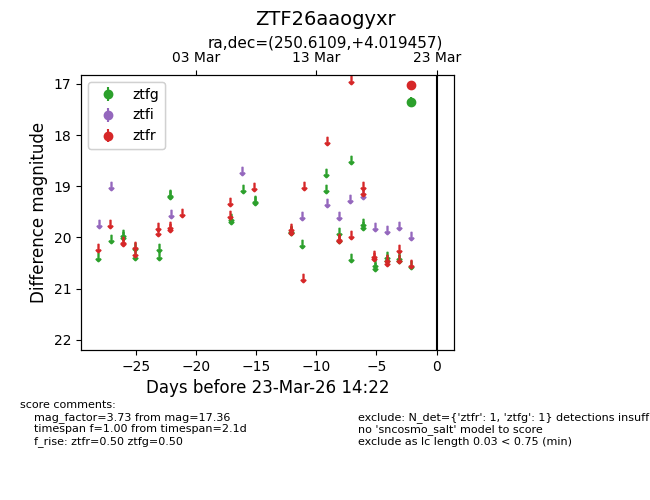
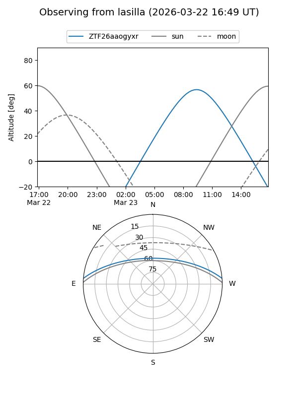
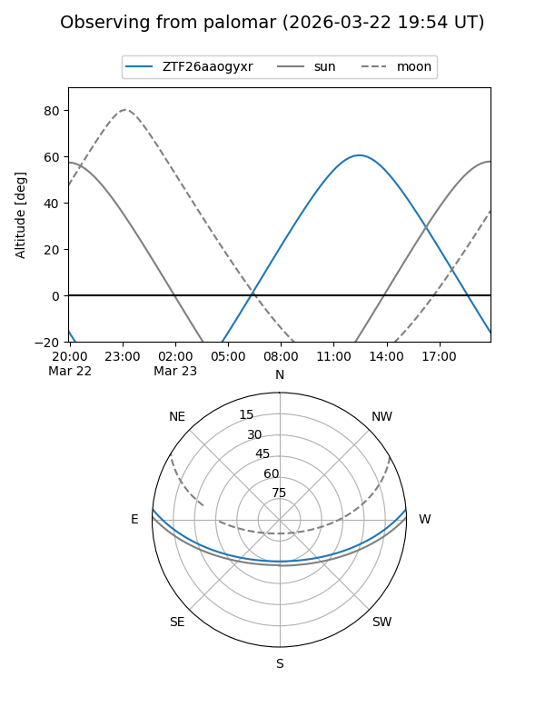

ZTF26aaogyxr
Target ZTF26aaogyxr at 2026-03-23 14:24
Aliases and brokers:
FINK: link
Lasair: link
ALeRCE: link
alt names
ZTF26aaogyxr (ztf,fink_ztf)
Coordinates:
equatorial (ra, dec) = 250.6109,+4.01946
equatorial (HMS+DMS) = 16:42:26.62,+04:01:10.04
galactic (l, b) = (20.8668,+30.37689)
Flags:
Photometry:
last ztfg=17.36, ztfr=17.03
1 ztfg, 1 ztfr detections
Lightcurve

Visibility


Additional plots